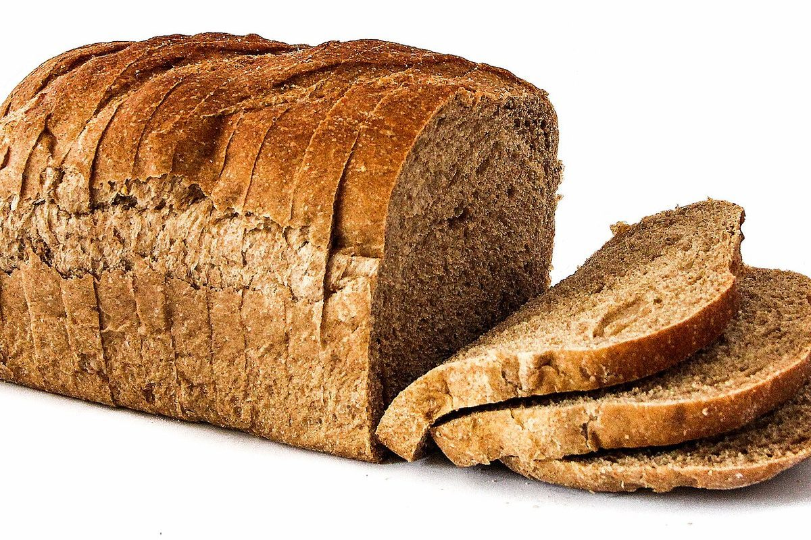

店のこと
店のこと
お店について確認できているのは、所在地とInstagramのアカウントだけです。
「折り図の読み方」の部分は、制作側が連想して書いたものです。お店の実際の様子・考え・商品とは関係がありません。
確認できていること
- 店名は「谷川パン」、業種はパン屋
- 所在地は群馬県利根郡みなかみ町谷川365(〒379-1619)
- 電話番号はなし。連絡はInstagramから
- 営業時間・定休日・メニュー・価格・ご予約・駐車場は準備中

山折り折り図の読み方(制作側の連想)
線が2種類あるだけの、簡単な図
谷折り(点線) 紙の中央がへこむ折り方
山折り(一点鎖線) 紙の中央が盛り上がる折り方
このサイトでは、ページを区切る線と写真に入った折り目を、この2種類で描き分けています。意味づけは次のとおりで、いずれも制作側が決めたものです。
- 谷折りの線(点線)は、確認できている情報の前後に引いています。
- 山折りの線(一点鎖線)は、制作側の連想や、準備中の部分の前後に引いています。
- 写真の中央の線は、紙を折ったように見せるための飾りです。